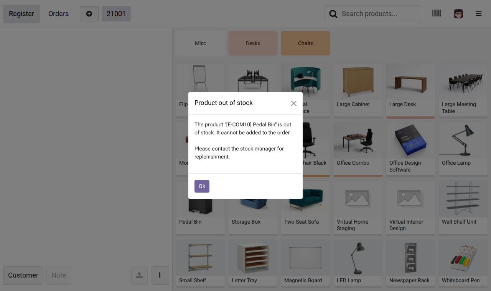
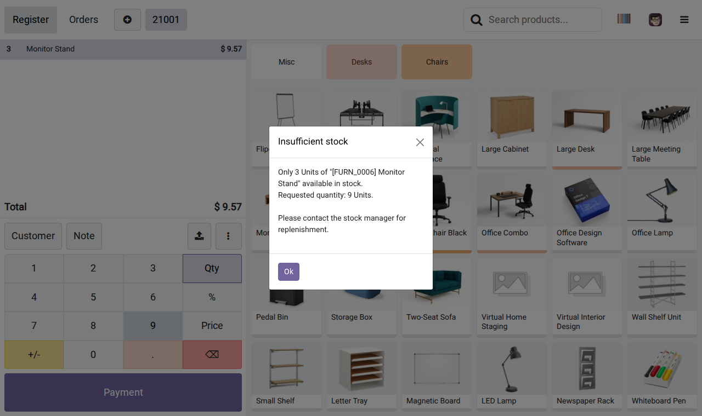
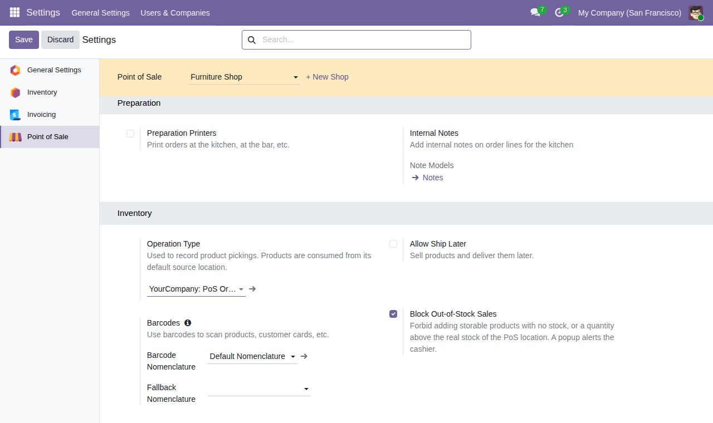
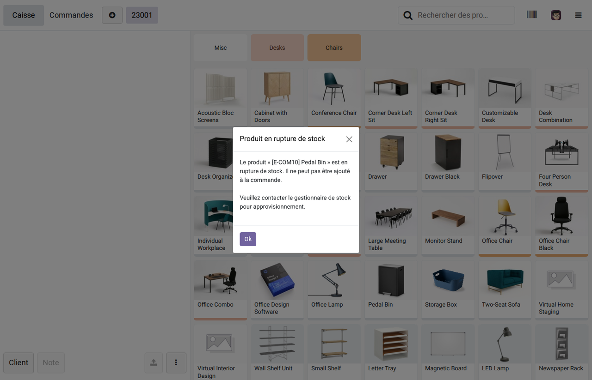

Need help or a custom feature?
HILATECH SARL — Odoo integrator in Douala, Cameroon. Support, implementation and custom Odoo development.
Odoo 19 Community Retail & Restaurant Free
By default, the Odoo Point of Sale lets cashiers sell any product, even when the stock is empty. This module checks the real quantity on hand in the stock location of each Point of Sale and prevents the sale of storable products that are out of stock, or of a quantity greater than the stock. The cashier is informed instantly with a clear popup.
A product with no stock cannot be added to the order. A popup explains why and asks the cashier to contact the stock manager for replenishment.
Clicking a product again, scanning it, or typing a quantity on the numpad can never exceed the quantity available.
The stock is read live from the server, in the source location of the PoS operation type. Quantities already sold in open sessions are taken into account.
The whole order is checked again when the cashier clicks Payment and when the payment is validated, in case another sale used the stock meanwhile.
A simple option per Point of Sale, in Point of Sale > Configuration > Settings > Inventory. Enabled by default after installation.
Only storable products are controlled (services and consumables are not). Decreasing a quantity, removing a line and refunds are always allowed. Translated in English and French.
The product cannot be added to the order when there is no stock left.

Adding one more unit than available is refused, with the available and requested quantities.
Typing a quantity above the stock keeps the previous quantity and shows the popup.

If the stock changed since the order was started, the payment is blocked and the products concerned are listed.

Available = quantity on hand in the source location of the PoS operation type (and its sub-locations) − quantities of paid PoS orders of open sessions whose stock moves are not done yet (useful when the stock is only updated at session closing) − quantities already in the open orders of the current Point of Sale.
Ce module interdit, dans le Point de Vente Odoo 19, la vente des produits stockables en rupture de stock ou d'une quantité supérieure au stock réel de l'emplacement du point de vente. Un pop-up informe le caissier à chaque tentative : clic sur un produit, scan, saisie au pavé numérique et contrôle final avant paiement. L'option s'active ou se désactive pour chaque point de vente dans Point de Vente > Configuration > Paramètres > Inventaire. Le message invite le caissier à contacter le gestionnaire de stock pour approvisionnement. Interface traduite en français.

HILATECH SARL — Odoo integrator in Douala, Cameroon. Support, implementation and custom Odoo development.